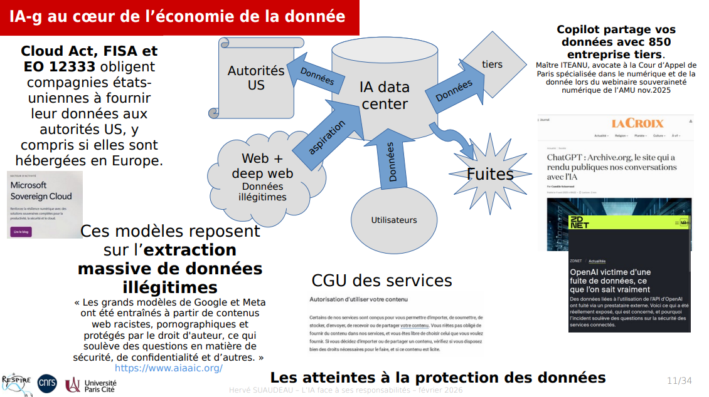

Les IA génératives peuvent potentiellement collecter et traiter de grandes quantités de données personnelles, ce qui soulève des préoccupations en matière de vie privée. De plus, les modèles peuvent être utilisés pour générer de fausses informations ou du contenu trompeur, ce qui peut avoir des implications éthiques et sociales.
Il est essentiel d'établir des réglementations claires et de promouvoir la transparence dans le développement et l'utilisation des IA génératives pour protéger les droits des individus et garantir une utilisation responsable de ces technologies.
Slide d'une conférence à laquelle j'ai assisté résument les points clés sur l'impact des IA sur les données et la vie privée :

Source : https://respire.resinfo.org/IMG/pdf/2026-02-20-respire-ia-h_suaudeau.pdf
Cas de Grok, l'IA intégrée à X (anciennement Twitter), qui a permis au utilisateur permis aux utilisateurs de modifier de manière non consensuelle les images d'individus.
source : https://en.wikipedia.org/wiki/Grok_sexual_deepfake_scandal